Hiiiii :3 I'm Miau. I like engineering and computers. I have somewhat of an obsession with factorio at 1700+ hours played in 3 years. I am currently studying Computer Science at a UC. I have an Associate's in Science for Computer Science, and a Certificate in C++ Programming.
Welcome home pookie!
Website Journal
9/21/2026
I haven't edited this website in 10 months...
Only doing it now because it went down again :3 It stopped working because some service I installed called wstunnel was hogging the https port and not allowing nginx to work. I don't even know when or why I installed wstunnel. (It might've been to set up email to get past vultr's restrictions)
After I fixed the website, I also fixed the git pagek, which wasn't updated properly last time I was here. And I changed the website introduction :3 and updated my factorio hours. I am currently at 1789.5 hours. It hasn't gone up that much this year because I didn't play for like 6 months ,_,
Anyway, update time ^_^
I went to a Gorrilaz interactive exhibit in February :3 that was pretty cool. They had an RV for one of the rooms and it was really stinky :P but I appreciated how they got the feeling across.
Around april 2nd, I started playing Pikmin Bloom with my friend :3 It was very fun and gave me both direction and reason to go on walks (I used to only go on night walks). Very pleasing planting flowers and growing flowers and feeding pikmin. However it took a lot of my phone battery :/ and my friend and I both started getting bored of it by the middle of june :(
I want to curse my local health clinic but don't want to say my city :[.. but fuck them :( I tried going through their hoops to get started on HRT (wow i'm trans guys who would've guessed :P), I met with my new doctor, waited 6 months, eventually made an endocrinology appointment, and when the day finally came, they cancelled on me two hours before it started X( saying they didn't have any qualified endocrinologists for prescribing HRT.
So I went to Planned Parenthood!! ^-^ They were awesome ^^ i got an appointment only three days after I called to make it, and they gave me a prescription the same day ^_^ I started on 0.05 mg patches of estradiol and 50 mg tablets of spironolactone. I have since had another appointment where my doctor increased my dosage to 0.075 mg of E and 100 mg of spiro ^-^
I saw the Backrooms movie 3 times in theaters. I don't even like it all that much. I just never felt like I understood it completely. 8/10 it's pretty good. hmm maybe I'll start a movie review page on here...
ok not in order but another idea: a button somewhere (probably the top) that reveals [<]spoilered[>] sentences so I can say things more freely (In case family looks at my website :3)
I went to Chubby Cattle, an all-you-can-eat wagyu restaurant, and it was delicious and wonderful even though I'm not a big fan of meat. I was also quite high for it so I'm sure that helped but it was nice and only like $50 each :3
I went to the beach by myself a couple months ago (by train) and walked down the beach a bunch.
Website addition: I added pol-dont.png to the backgrounds area of sillies :3
Yes Yes I have tits now and they will be wonderful ^_^
11/23/2025
Got my first ever blue screen while alt-tabbing from discord to signalis ^-^
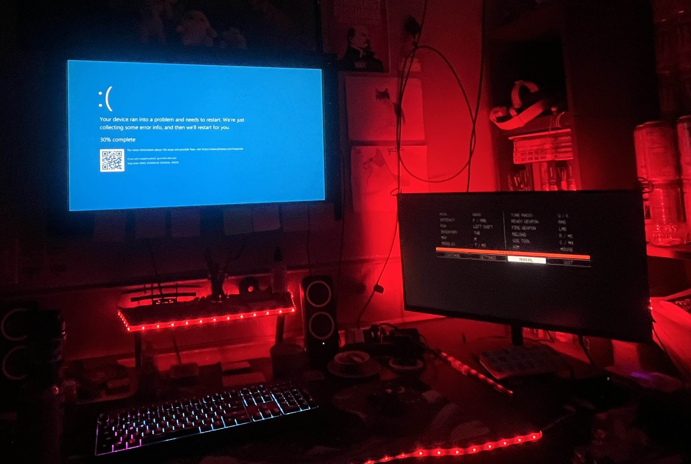
11/19/2025
I finally fixed the server and got the website back up after like two months of it being down <~>
In the meantime, I haven't been updating here very much, mostly because school has been kicking my ass. I'm taking Calculus II, Critical Thinking (the philosophy section, not the english section), Electricity and Magnetism, and Data Structures. I have also been busy with a communist organization I have joined: the Revolutionary Communists of America (RCA). We meet multiple times a week, we go to a bunch of strikes and protests, and I have also been reading a lot more because of it. We even have a monthly newspaper :3
As always with these journals, it is 7 am and I am very tired and need to sleep. Goodnight and sweet dreams <3
8/29/2025
I changed the logo and logo link for my cgit page, so now the image is the same one as from the top of this page (miau.jpg), and it links back to this page as well. :3
8/9/2025
Woag I'm back from Japan and I just p-ranked act II of ultrakill!!!
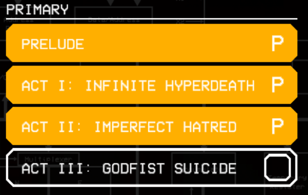
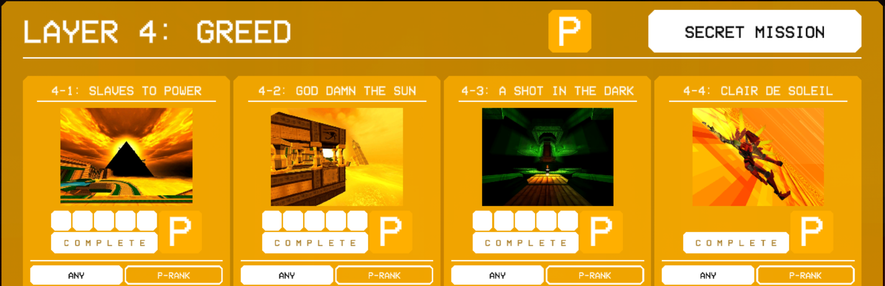
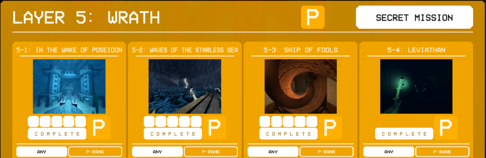
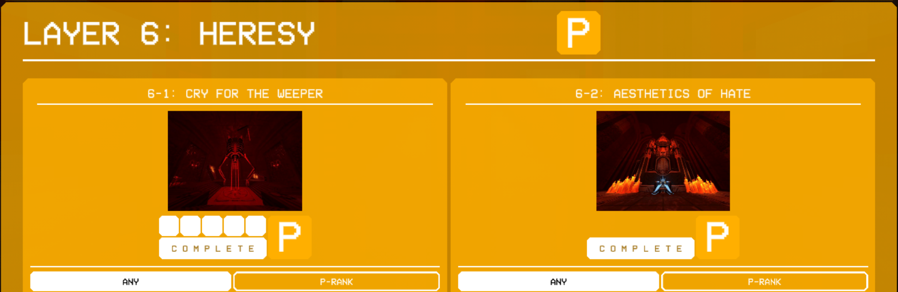
I also harvested some potatoes that I planted in march yesterday ^-^
Potato and Japan pictures will be released soon :3
7/18/2025
I added a function to put the onclick() functions to every image on
silly, so now every image can be a background.
This also means it is possible to reset the background now (before the original would not stick).
Yippee!
6/5/2025
I added a chat box on the aside -->
you can message on it without signing up or anything.
Say whatever :3!
6/4/2025
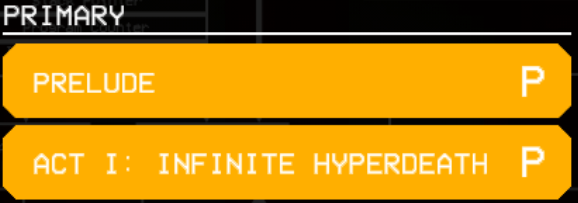
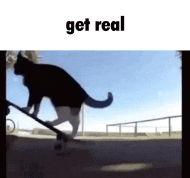
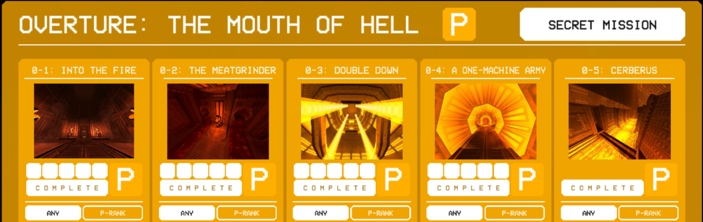
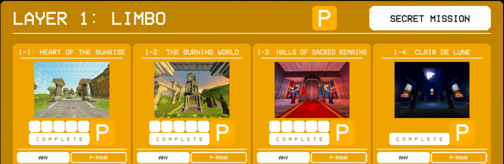
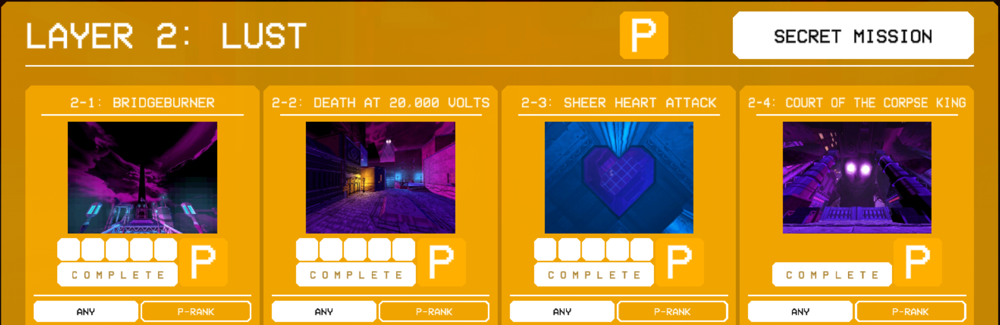
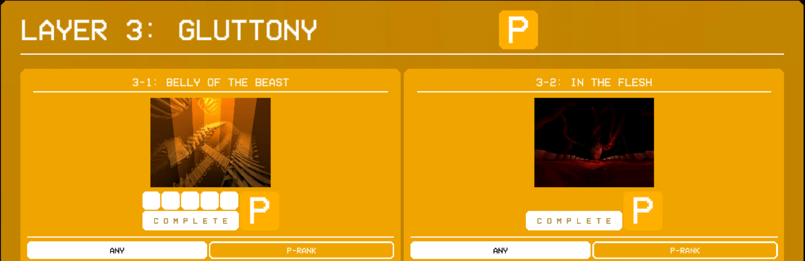
5/30/2025
I showed off this site to a friend recently, and she said she was disappointed the background from Silly didn't stay when she changed pages, so I used some of what I learned from my computer science projects this semester, along with looking at how this person did their themes, to make the images load on other pages.
How it works is, on Silly, when you click an available image, it stores the file name in local storage as "background". Then, whenever a page is loaded, it changes the background image to whatever that clicked image was. This took far longer than it needed to, but I learned a lot about using local storage instead of cookies. ^-^
Also I bought Ultrakill and I P ranked the prelude again, as well as layer 1. :3
5/22/2025
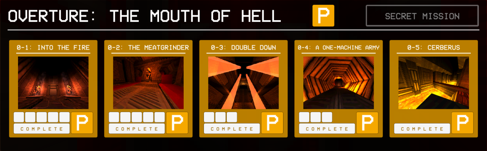
AAAAAAAA look! :33333/25/2025
Hey hey people, I have updated my factorio hours up top (1300->1500), which is currently at 1561 hours.
I updated the cgit stylesheet to fix some color issues, such as the code being black text on a dark gray background.
I sent my all of the programs I made while doing Harvard's cs50 course to my git page.
2/6/2025
I have wanted to host my website myself for a while now, and I finally got to it and started following LandChad's course on how to 'Start a website'
- Started renting a small debian server from Vultr
- Connected my domain 'almightymiau.gay' to the server's IP
- Set up nginx on the server, which serves the website to people
- Got https certification set up with Certbot (it's free! wow!)
- Set up a cronjob to automatically renew the certificate
- Cloned my website onto the webserver from github
- Set up a cronjob to automatically update the website from github every 12 hours
- Installed rsync on server and laptop (didnt do much with it)
- Set up SSH keys from laptop to vps :3
- Installed dnsmasq (havent done anythign else for it)
- Read about Monero, I'm interested but haven't done anything yet
- Set up Wireguard VPN on vps, connected laptop, FAILED
2/8/2025
- Set up git system on main website
- Set up cgit, a git web interface, available at git.almightymiau.gay
- Pushed Bitburner.git, Odin-recipes.git, Odin-landing.git (all of my important/neat repos to server)
- Didn't like the light mode that comes with cgit, so I found a dark theme online, and put the stars background on it.
- I'll change more of the git page's style sometime, but there's a lot to go through in there.
Added the button to go to my git page on the sidebar. There isn't a link back here from there tho.
1/12/2025
Today I did some pondering (I sat outside on my couch for an hour after getting an hour of sleep) on the relationship betweeen pay, effort, and skill of jobs. I started out with a disconnect between the physical effort of a job and how well it pays, such as the difference between physical labor (I think of farming) and office work. I do realize that the development of a skill should correspond to an increased pay, but it still feels weird to me that there's an inverse correlation between the physical effort of a job and how well it pays. (I beleive high level skills (doctors, artisans) should be rewarded for their abilities, its just that office work feels strange to me)
I also added a picture of "Chad" to Cats
11/25/2024
I finished my playthrough of the Factorio mod Space Exploration, and started adding pictures of my factory to Factorio.
I don't think I'm finishing it tonight because my eyes are already closing
10/24/2024
I added two pictures of my Factorio Space Exploration factory to the Factorio page.
10/23/2024
woa not neglected this time
I added megidolaon's button to the side bar
added 4 stamps and 10 stickers to silly
thats it :3
10/20/2024
AAAAAAAAAAAAAAAAAAAAAAA I neglected my child again
I am here today to add a new feature to the SILLY page, so that when you click/hover over the PISS sticker, it will change the background to that sticker. :3
I am planning on adding a bunch of stuff to the Factorio page, but i haven't gotten around to it bc it sounds like a lot of work :(
I am also going to add a list and pictures to the Cats page
I've been in my first actual semester of college for the past 2 months, which is part of why I haven't been working on this. I really enjoy my comp sci class, even though I should probably be in a higher level class. If I could, I would only do this class (computers :3). I am also in a calculus 1 class, most of which I already learned in high school :/. My art appreciation class is quite interesting, learning about different paints, how they're made, what they excel in, etc. I really don't like my english class and I can't wait until I don't have to take any more.
:3
ok 2 hours later and I have added background effects to some of the stamps and stickers. (I don't think all of them need/deserve it) When you click on a sticker, for example the one that says piss, it will toggle that image as the background. The set of backgrounds at the bottom use a different method that I completely stole from sadgrl, which will have a preview of a background while you hover your cursor over it.
It is 4:23 am and I am quite eepy ¦| goodnight
8/7/2024
⤑ Tried using python with flask to simplify adding new pages, but it didn't work out :(
⤑ Added a new page called Silly
⤑ Added a bunch of stamps and buttons to Silly
⤑ Finally added art to Art. I have drawings of my cat Sassy, Adeptus Mechanicus artwork, memes I drew during math class, a marker tattoo I made a while ago, and some digital art
⤑ Fixed tab titles, added a metadata description, and added a tab favicon
8/1/2024
Wow it's already been a month and I haven't done anything on here.
⤑ I finished my first college course recently. I had CIS-1A, an introduction to computer systems and microsoft office. It was pretty easy and I can't wait to start my fall term. I'm gonna have C++ programming, Calculus I, English comp, and Art appreciation.
⤑ I made a new page today that I've been thinking about adding for a week now: Breakthroughs. I want a place where I can just put down my thoughts.
⤑ The supervisor of a summer program I've gone to for a few years suggested a scholarship I should apply for, along with giving me a letter of recomendation. I started the application process today, but got too tired half way through
7/5/2024
The first version of my personal website, made for the Harvard CS50 class. I'm making this personal site to learn HTML/CSS, and because I love how creative people are with their personal websites. I also don't like social media and this just feels better.